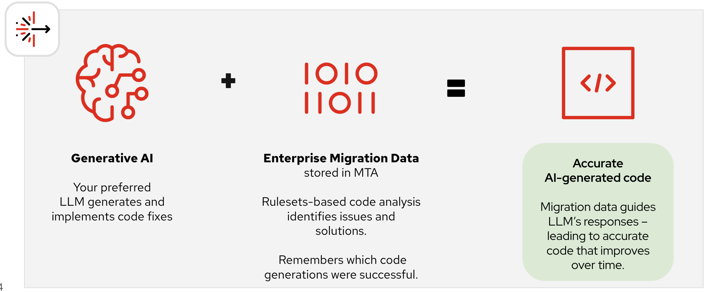
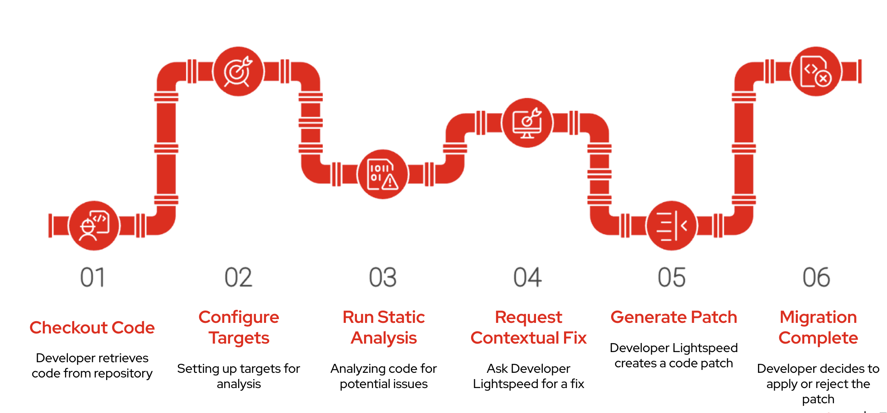

Accelerating Modernization with AI
In the previous lesson, you learned how Migration Toolkit for Applications (MTA) analyzes applications and helps organizations modernize large application portfolios.
In this lesson, you’ll see how Red Hat Developer Lightspeed enhances MTA by using AI to generate migration code suggestions, reducing the manual effort required to modernize applications.
| AI does not replace the migration analysis performed by MTA. Instead, it uses MTA’s findings to recommend code changes that help developers modernize applications faster. |
AI-Assisted Application Modernization
Migration Toolkit for Applications identifies migration issues and explains what needs to change.
Red Hat Developer Lightspeed builds on that analysis by generating AI-assisted code recommendations that address those migration issues.
Instead of manually interpreting reports and updating code, developers receive contextual code suggestions directly inside their development environment.

How Developer Lightspeed Works
Developer Lightspeed combines two sources of information:
-
Your preferred Large Language Model (LLM)
-
Migration analysis and rules generated by MTA
Together, they produce migration recommendations that are specific to your application rather than generic AI responses.
Unlike a general-purpose coding assistant, Lightspeed understands:
-
Migration targets
-
Migration rules identified by MTA
-
Application dependencies
-
Enterprise modernization guidance
This results in more accurate and context-aware migration suggestions.
AI-Powered Modernization Workflow
The modernization process follows a simple workflow.

The developer opens the application source code from the Git repository.
The desired modernization target is selected, such as Quarkus, Jakarta EE, or another supported runtime.
MTA analyzes the application source code and identifies migration issues, unsupported APIs, and required changes.
The developer asks Developer Lightspeed to generate a migration recommendation for a selected issue.
Developer Lightspeed produces a code patch using the migration analysis provided by MTA together with AI-generated recommendations.
The developer reviews the suggested changes and decides whether to accept or modify the generated patch before committing the code.
Key Benefits
Using Developer Lightspeed together with MTA enables organizations to modernize applications more efficiently.
-
Generate migration code suggestions tailored to your application
-
Apply code fixes directly from the IDE
-
Reduce repetitive manual migration work
-
Improve consistency across multiple modernization projects
-
Reuse migration knowledge across similar applications
-
Increase developer productivity while maintaining human review
|
Developer Lightspeed assists developers by generating migration suggestions, but developers remain responsible for reviewing, validating, and accepting the proposed code changes before they are committed. |
Why This Matters
Modernizing enterprise applications often involves thousands of repetitive code changes.
By combining AI with MTA’s migration intelligence, organizations can:
-
Reduce migration effort
-
Accelerate application modernization
-
Improve consistency across migration projects
-
Help developers focus on business logic rather than repetitive code changes
Reflection
Think about your organization (Click to expand)
-
Which migration tasks in your organization are repetitive?
-
Could AI-generated code suggestions reduce manual effort?
-
Where would human review still be essential before accepting generated code?
Check Your Understanding
Quiz Time! (Click to expand)
What is the primary role of Red Hat Developer Lightspeed when used with MTA?
-
Replace MTA’s analysis engine.
-
Generate AI-assisted code recommendations using MTA’s migration analysis.
-
Automatically migrate every application without developer involvement.
Answer
B — Developer Lightspeed uses MTA’s migration findings together with AI to generate contextual code suggestions that developers can review and apply.